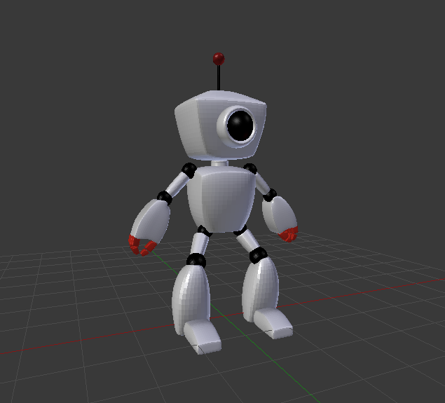

Robot

Esto es un robot modelado con el programa Blender, la idea de este trabajo era modelar un robot de forma low-poly, siguiendo una serie de instruciones y tamaños dados anteriormente. En la imagen podemos ver el robot con el modificador 'Subdivide' ya aplicado, consiguiendo asi una forma mas redondeada que la que conseguiriamos con el low-poly inicial